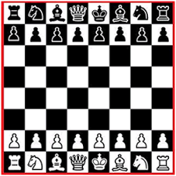

 Xadrez é um esporte de tabuleiro, para dois jogadores.
O jogo de Xadrez é disputada no tabuleiro de casas clara e escura;
no inicio, cada enxadrista controla dezesseis peças com diferentes formatos e carcterísticas especificas.
 Como já sabemos cada enxadrista fica com 16peças:
Como já sabemos cada enxadrista fica com 16peças:oito peões, dois cavalos, dois bispos, duas torres, um rei e uma rainha.
 Durante o jogo de xadrez, cada enxadrista controla suas peças,
Durante o jogo de xadrez, cada enxadrista controla suas peças,
que podem ser cor clara ou escura(branca ou preta), sendo que as claras sempre inicia o jogo.
O tabuleiro tem oito fileiras e oito colunas
(sendo medade claras e metade escura) intercaladas.
 Observe com atenção no movimento do Peão.
Observe com atenção no movimento do Peão. Atenção que já estamos aprendendo os movimentos das peças.
Atenção que já estamos aprendendo os movimentos das peças.